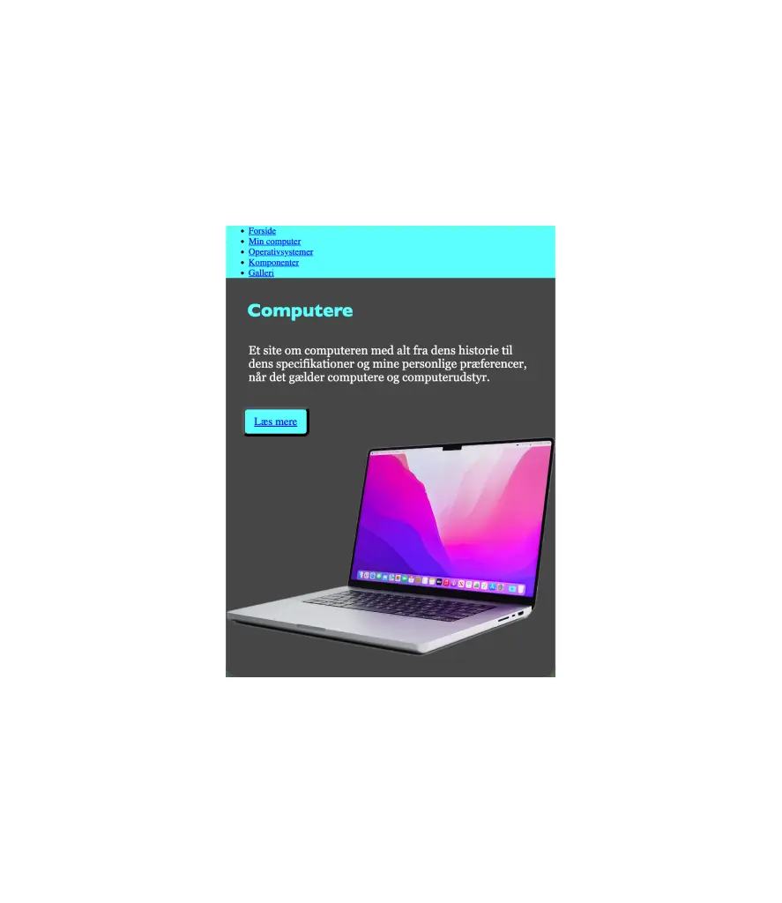
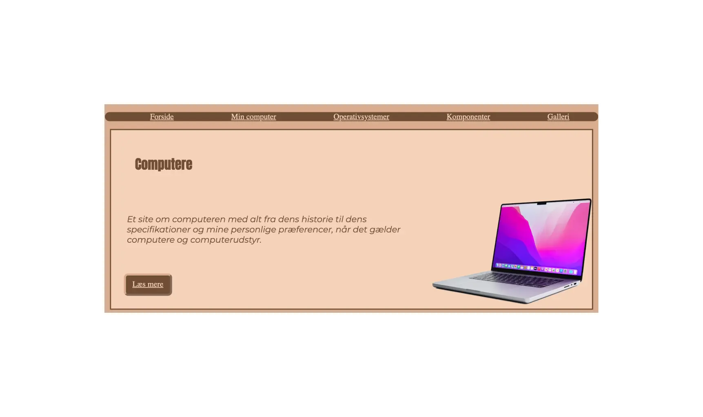

TEMA 2 - GRUNDLÆGGENDEWEB


Løsning
Tema 2 startede vi ud med at lave et mobilsite. Sitet skulle omhandle computere, hvilek operativesystemer de forskillige typer af computere har, komponenterne i en computer, og en lille kort tekst om ens egen computer.
Slut på temaet fik vi studiestartprøven, her skulle vi videre udvikle vores mobilsite fra tideligere til også at kunne fungere som computersite.
Proces
Vi fik udleveret wireframs, billeder og tekst som vi skulle programere vores hjemmeside udfra.
Sideløbende lærte vi i undervisningen de mest grundlæggende ting i vs-code, så vi nemt kunne komme igang.
Reflektion
På computersitet ønskede jeg at prøve kræfter med nogle andre farver da jeg så startede på computersitet, da jeg ikke var tilfreds med farverne fra mobilsitete. og endet derfor ud med et helt andet udtryk end mobilsitet.